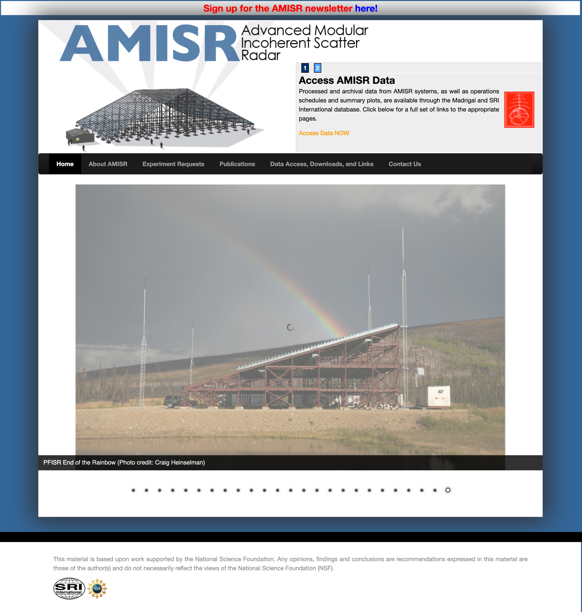
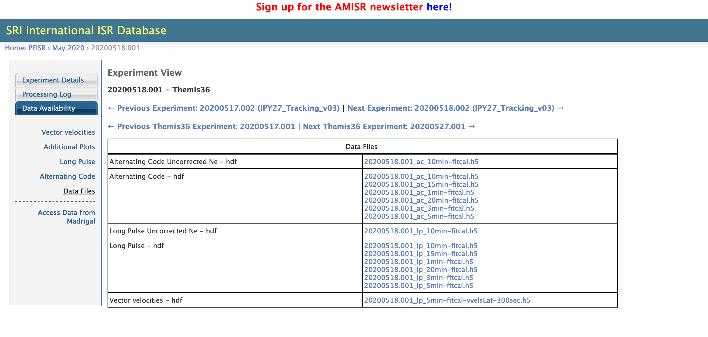
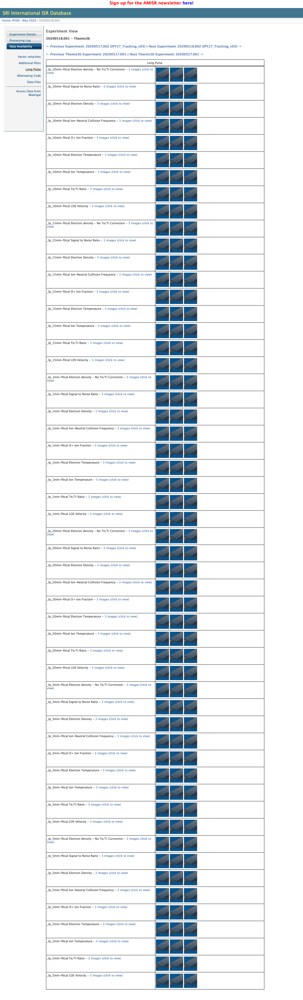
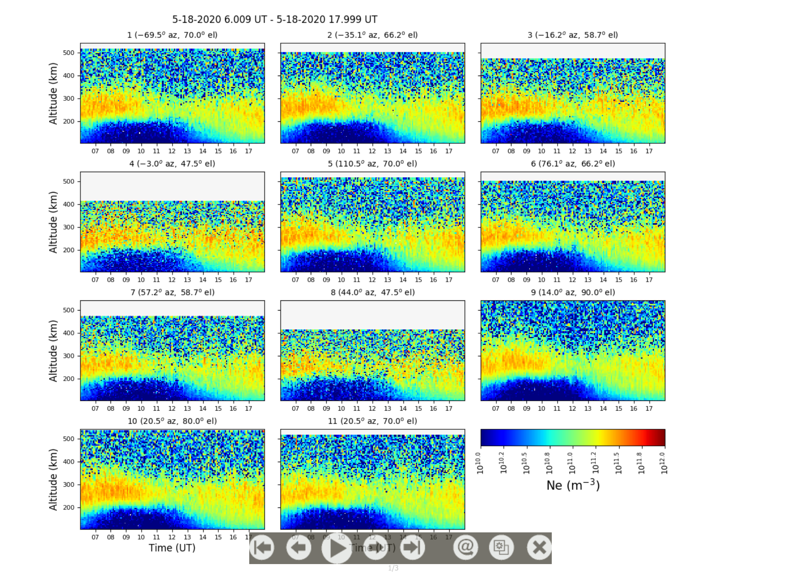

SRI Database#
Processed AMISR data and other information about the radars is available on the SRI AMISR website.

To access the data for downloading, click Data Access, Downloads, and Links.
Download Data#
Now choose “Data Availability” from the left sidebar menu. This menu will expand with a number of additional options. To download data files directly, select “Data Files”.

This produces a table of data files. Click on the filename to download. For processed data, the file naming convenctions is as follows:
{Experiment Number}_{Pulse Code}_{Integration Period}-fitcal.h5
Experiment Number: A unique decimal number that identifies individual experiments. These are formed as YYYYMMDD.NNN where YYYYMMDD is the date the experiment STARTS on and NNN denotes the number of the experiment in that day.
Pulse Code: Either lp (long pulse) or ac (alternating code).
Integration Period: In recent years, all data are processed using muliple integration periods for convenience. Most users should be able to select from this standard list. In general, longer integration periods will result in data with smaller errors, but lack temporal resolution and some features may be “smeared out”. A good rule of thumb is to choose the longest integration period that still gives you the time resoultion you need for your particular scientific application.
Summary Plots#
To view summary plots for this experiment, select either “Long Pulse” or “Alternating Code” from the left sidebar. This produces a LARGE table of summary plots to view. This table contains a row for each major parameter at each integration period.

This is long, but scroll down to the parameter and intergration period of interest (in this example, electron density at 1 minute). Click on one of the radar square thumbnails in the second column to view the summary plots.

Each subplot in this figure shows a RTI from one beam of the experiment. To keep plots readable, no more than 24 hours of data are plotted in a subplot and no more than 11 subplots are shown in one figure. If the length of the experiment or the number of beams dictates more than one page is nessisary, these can be flipped through either using the control bar in the bottom of the plot or your keyboard arrow keys.